医疗用品系列
面向妇产科医疗护理流程，覆盖产前准备、产程护理、产后恢复、新生儿护理及婴儿游泳防护等场景。
孕产妇专用卫生巾
为孕产妇产前与产后卫生护理设计，注重舒适贴合、吸收防护和日常护理便利性。
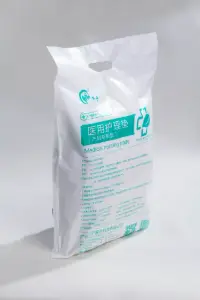
胎监带
用于胎心监护等产检护理场景，帮助固定监护探头，提升检查过程的稳定性与舒适度。
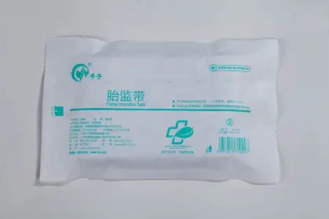
入院待产包
将待产入院常用护理用品组合成套，便于孕产妇提前准备，也方便医院和渠道标准化配置。

护理垫
适用于产前检查、住院待产和基础护理防护场景，帮助保持床面清洁并减少护理负担。
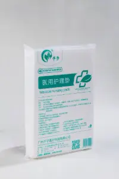
入院待产包
面向产程护理准备的组合用品，覆盖入院后常用耗材，适合医疗机构与产妇按需配置。
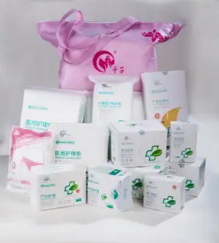
产床罩
用于产床表面隔离与清洁防护，帮助产程环境保持整洁，适配妇产科护理使用。
计量产程垫
服务产程护理和出血量观察等关键场景，兼顾吸收、防护和计量辅助，是重点医疗护理产品。
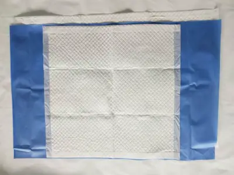
医用护理垫
用于产程及住院护理过程中的床面防护，帮助减少污染扩散并提升护理操作效率。
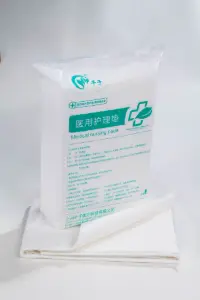
腹带
用于产后恢复护理场景，帮助腹部支撑与日常护理管理，适合产后阶段配套使用。
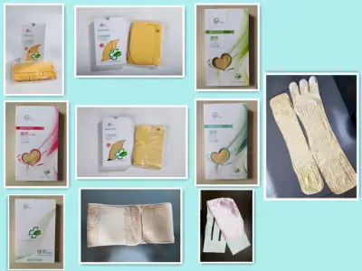
产后护理包
围绕产后清洁、防护和恢复需求配置常用品，适合医院、月子中心及家庭护理场景。
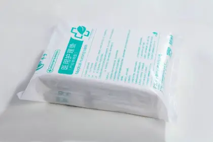
计量型医用护理垫
在常规护理垫基础上强调计量辅助功能，适用于产后出血量观察和护理记录场景。
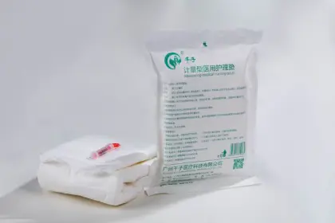
医用护理垫
用于产后住院与恢复护理的基础防护耗材，帮助保持护理环境清洁、干爽。
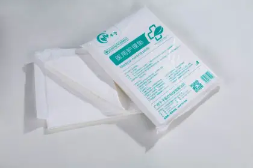
产后收腹带
针对产后腹部支撑与恢复护理需求设计，适合与产后护理包、护垫等产品配套使用。
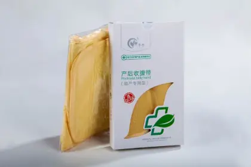
产妇专用卫生巾
面向产后恶露期卫生护理需求，强调吸收、防漏和产妇使用舒适度。
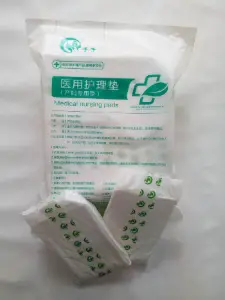
护脐带
用于新生儿脐部护理与防护，帮助减少外部摩擦，适合出生后早期护理场景。
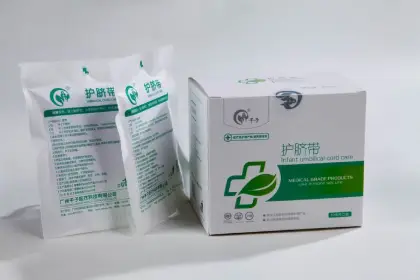
游泳贴，透气贴
用于婴儿游泳及日常防护场景，兼顾防护、透气和贴合需求。
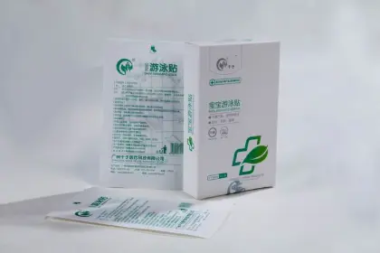
游泳袋
用于婴儿游泳护理配套场景，便于一次性防护和环境清洁管理。
游泳圈
婴儿游泳辅助用品，适合母婴护理机构和家庭婴儿游泳护理场景配套使用。
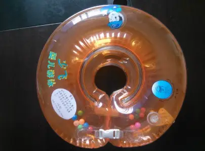